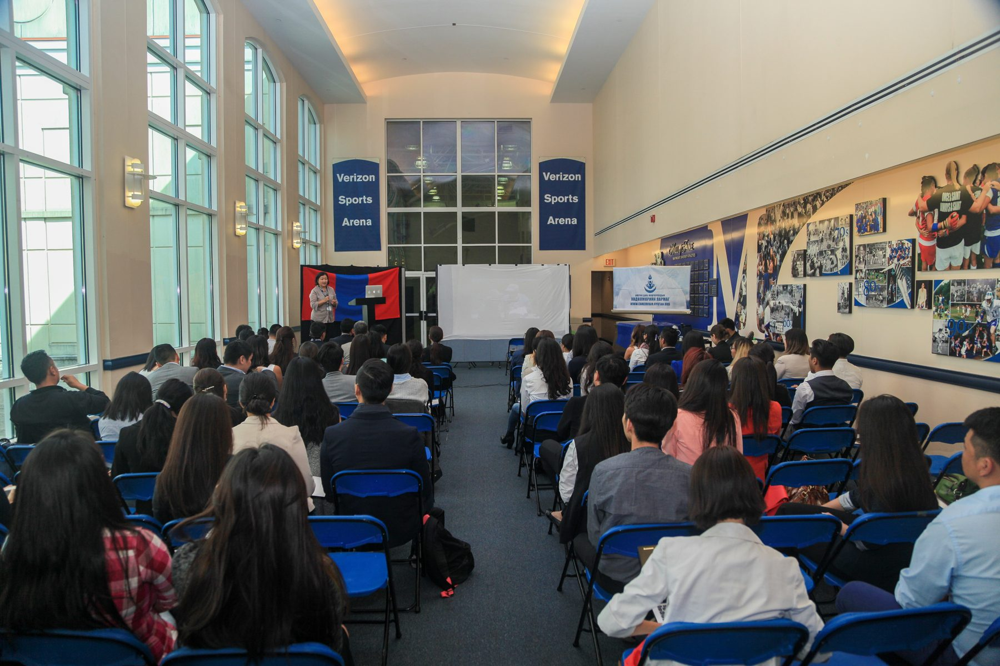

F
Year-two team
Founding organizing team
Year two of the Mongolian American Career Fair, organized by the founding team that also produced the 2014 Chicago edition
The Mongolian American Career Fair moved east for its second edition, bringing the same mission to the diaspora's policy-and-public-service capital.
East Coast · MACF II · volunteer growth.
2015 was the year the organizing team started widening, the org transitioned from its small founding crew into a distributed network across multiple cities. Programming centered on professional development and recruiter networking for Mongolian students concentrated on the East Coast.
This page is light on details, we're still collecting materials from 2015. If you attended, organized, exhibited, or have photos or programs, send them in and we'll build it out.
2015 was the second annual Mongolian American Career Fair, a single-day program in Washington, D.C. centered on professional development and recruiter networking for Mongolian students concentrated on the East Coast. The organizing team started widening this year as the org transitioned from its founding crew into a distributed network.
The 2015 edition kept the original career-fair format: morning keynote, employer-recruiter panels, mock interviews, and an afternoon networking block. The single-day model would later expand into the multi-day weekend that became the MNG Summit template starting in 2016.
2015 D.C. program details still being reconstructed. Venue, exact date, and speaker list welcome at archive@mngsummit.org.
The 2015 D.C. speaker list is still being reconstructed from the original organizing team's records. The single-day career-fair format brought hiring managers and recruiters from US-based companies with Mongolian alumni or interest in the diaspora.
D.C. · 2015 · 2nd annual Mongolian American Career Fair. The room where the volunteer roster started widening into a distributed network across multiple cities.

Help us fill this page in.